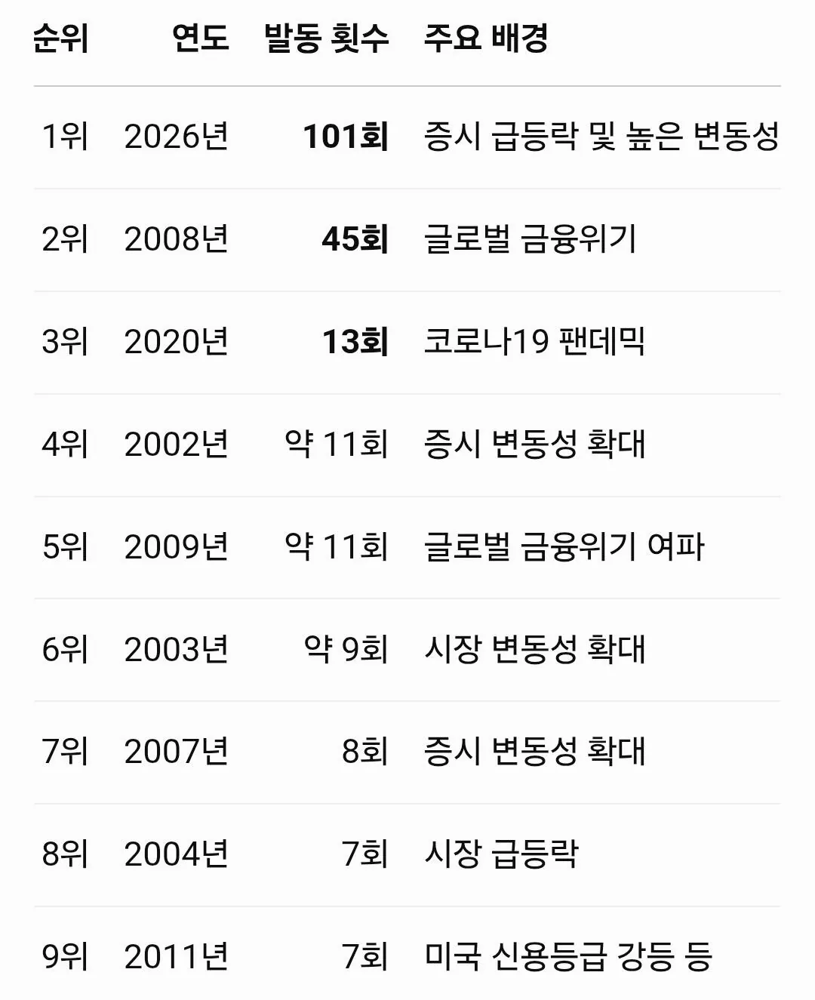

참고로 오늘도 사이드카 발동되어서 102회임
1위 2026년, 이유 : "그냥"
증시의 급등락때문에 사이드카가 발동되는거라 사이드카 발동 이유를 증시 급등락으로 표기하는건
사망사유 : 심정지 로 적는것과 비슷한거임 ㅋㅋ

참고로 오늘도 사이드카 발동되어서 102회임
1위 2026년, 이유 : "그냥"
증시의 급등락때문에 사이드카가 발동되는거라 사이드카 발동 이유를 증시 급등락으로 표기하는건
사망사유 : 심정지 로 적는것과 비슷한거임 ㅋㅋ
나라라면
"순수 체급"
이게 우리나라 문제만은 아니지 않나
우리나라가 유독 변동성이 크긴 했음
한국이 전세계에서 가장 세게 쳐맞는 메모리 포트의 비중이 시총의 30% 쯤 되거든
단일 레버리지가 큰효과를 냈지... 거기에 트황상
그냥은 솔직히 웃자고 하는 소리일테고, 'AI 파동' 이라 적음 되려나?
이런저런 이유가 있겠지만 적당히 써보자면 'AI버블 논란과 기형적 급성장에 의한 부작용'정도의 문장일듯?
삼하 버는거보면 버블은 아닌뎅..
재밌으니까
사망사유 : 죽었으니까
사이드카 발동 횟수가 바로 국격입니다.
2026년에도 리먼사태가 터졌구나(O)
공매도 이 씨 발 새 끼 들
Ai 버블
외국인이 사팔해대서 그런게 아니야?
ETF가 변동성 키운거아님?
이거 일수도 있음 두 종목의 변동성을 너무 크게 파급시킴 올라갈때 화끈하게 올린만큼 떨굴땐 더 미친둣이 떨굼
떨구는 속도가 원래 더 빠른거라
2배 3배 레버리지 문제
응 아니야 집팔아서 주식사야할때야
이유 나만 알어? 정상적으로 가는걸 국민연금 리밸런싱 막고 레버리지 2배 이지랄하면서 과열시켰으니까 저 지랄났지
말하면 영포티 아저씨들이 이놈하고 시끄럽게 뭐라함ㅋㅋㅋㅋㅋㅋ
티~원
주말 공휴일 빼고 올해 주식거래일이한 200일되려나 ㅋㅋㅋ
정부주도 도박판 아니냐?
2002~2004년도 그냥이야?
그냥 x
누군가의 실책 o
젠슨황이 야추 잘못 휘둘러서?
젠슨황이
국민연금 리밸런싱 막고
개별주식 래버리지 출시해서 국장 안락사 시킴?
아직 한달남았음 ㅋ
어허!
변동성이 크다는건 돈 벌 기회가 많다는 것
파동 발라먹으러 다들 덤비다가 박살난다.
나는 아닐거라고 착각하는거보다 현금 열심히 모았다가 자살자 속출하면 그때 배팅하셈
어떤 자식농사 망친 깡패새끼가 주식 하락은 정부탓이라 했는댘ㅋㅋㅋㅋ
헉 이거 ㅇㄱㄸ아님? 일단 신고해보겠음. 님 얼마전에 한번 ㅇㄱㄸ로 제재먹지않음? 3스트라이크아웃일건데
안먹었는데? ㅋ
그분
IMF때는 없었나
역대급 나라 ㅋㅋㅋㅋ